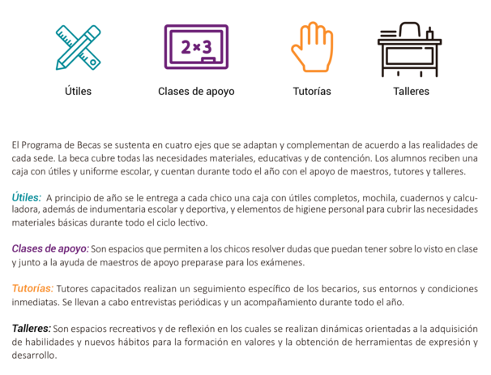

Programa de Becas
Caja
A principio de cada año, al ingresar o renovar la beca, cada chico recibe una caja con los útiles necesarios para todo el año, organizados y pedidos en cada sede; también cuentan con parte del uniforme pedido por cada escuela, y elementos de higiene que fomentan el cuidado y el aseo personal, como modo de presentación y hábito.
Apoyo escolar
Cuando comenzó el programa, se pensó, primera y principalmente en acompañar a los chicos en la comprensión y la elaboración de tareas; ellos mismos llevaban sus deberes y se les explicaba los temas que no se habían entendido, se reforzaban conceptos y era un tiempo y un espacio para realizar las tareas pendientes de la semana.
Actualmente, sigue siendo, en parte así, pero también nos concentramos en la metodología de estudio, en enseñar cómo resumir, sintetizar y comprender textos.
Es un espacio fundamental para trabajar y fortalecer la autonomía y la responsabilidad de cada becario, que es el protagonista de su propia trayectoria escolar. Maestros y profesores, voluntarios y coordinadores, todos, acompañan a los chicos en su desempeño académico, como dimensión primera y fundamental de su formación personal y desarrollo.
Tutorías
Es un espacio mensual donde los chicos se encuentran con un referente particular de Dale tu Mano, el tutor o tutora, que le hace un seguimiento personal, mes a mes, que acompaña las dificultades y los logros académicos, y establece objetivos concretos para superar obstáculos y fortalecer habilidades.
Talleres
Los talleres están organizados como un espacio de desarrollo personal, donde poder mejorar las habilidades sociales, emocionales y de fortalecimiento del ser. Lo hacemos porque entendemos que la educación debe tener una mirada integral e integradora donde los alumnos cuenten con espacios no solamente para adquirir “conocimientos” y contenidos, sino donde desarrollar habilidades personales y sociales que les permitan desarrollarse en el mundo de hoy, que les permitan comprender el mundo desde el lugar de lo activo, de la acción, del compromiso y de la ayuda a los demás.
El proyecto de talleres tiene las siguientes características: es un proyecto sostenido en el tiempo, que profundiza en ejes temáticos a medida que pasan los años del secundario, Es interdisciplinario, los talleres tienen una fundamentación teórica que apunta a la mejora integral del ser. Son de una aplicación lúdica, práctica y de alto nivel de participación. Son espacios abiertos, creados para que la propia retroalimentación del grupo enriquezca los contenidos.
Novedades
Nuevo programa: Beca universitaria.
Hasta la fecha, el objetivo era garantizar la trayectoria escolar, combatiendo la deserción y los obstáculos que pudieran llevar a la misma.
En 2016, profundizando en el programa educativo que llevamos a cabo, surgió la pregunta acerca de la formación de profesionales que puedan ser futuros agentes de cambio en sus propias comunidades de origen.
Posibilitado por el crecimiento en difusión, recaudación y estructura de la asociación civil, y ante la inquietud de una de las egresadas de Santa Victoria Este, nos propusimos inaugurar un programa de becas universitarias a partir de 2017.
Dicho nuevo programa consta de:
El solvento de la matrícula y la cuota mensual de la Universidad.
El solvento de los gastos de hospedaje.
El solvento de gastos de materiales, transporte y alimentación del becado.
Acompañamiento de equipo de contención.
La primera participante del programa de becas universitaria es Beatriz Artalaz. Desde 2013 es becaria de Dale tu Mano. Beatriz es una excelente alumna, aplicada y responsable; comprometida con el estudio. Se destacó en ella, durante estos años, su solidaridad, su respeto para con los demás compañeros y su motivación para aprender.
Ella sueña con ser maestra de grado en Santa Victoria Este, de donde es oriunda, para poder ayudar y mejorar la educación, como siente que han hecho por ella. Por las dificultades económicas que atraviesa su familia, se le hacía imposible, porque solo yendo a Salta podía estudiar dicha carrera. Como asociación civil nos comprometimos a asistirla y acompañarla durante su formación como maestra de grado, mediante un sistema de padrinazgo. Se mudó a una residencia universitaria en febrero de 2017 y comenzó sus estudios en el Profesorado Corazón de Jesús, en la ciudad de Salta.